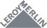
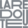

About me
I am not a unicorn-influencer-digital-ninja-artist: my job is to be a designer, quite simply. I therefore strive to always keep a critical eye on my profession, its methods and the goals it serves.
My design approach is always thought out in the context in which it takes place, in order to design interfaces and solutions for (and with) the user, based on dialogue, curiosity and empathy.
In short, in the midst of design systems, designing accessible interfaces, prototyping and meeting real people, I let my curiosity be nourished every day... with the very simple desire to constantly continue to learn new things.
How I can support your project
-
User research
-
Questionnaires, interviews, clear visual synthesis.
-
Design
-
Wireframes, user interfaces mockups, design systems.
-
Testing
-
Prototypes, test protocols and conducting user tests.
-
Workshops
-
Co-design and training in UX and UI design.
Some clients |
|||
|  |  |